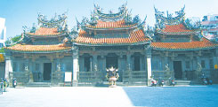

看盡時代興衰 老街文化從觀光工廠再出發
漫遊充滿巴洛克風情的三峽老街，
至今仍保留許多日治時代以來的商業街屋建築，
從兩旁店鋪的商號匾額，不難看出昔日繁華的榮景……
楊存菁｜大紀元時報／休閒樂活∣2013年1月18日
三峽老街位於新北市三峽區，清末時稱之為「三角湧街」。清末此地因水運發達，來往船隻可經由大漢溪深入街庄，從事商業貿易。同時，也因其作為山區特產——藍靛的集散地，因此手工染布在當時成為三角湧街的特色行業。
戰後，隨著時代更迭，舊時的三峽街庄失去商業貿易地位，逐漸被遺忘在時光中，徒留充滿浪漫風情的巴洛克式街屋建築。
茶山房 承傳半世紀文化
伴隨三峽走過50年興衰的天然浮水皂「茶山房」，基於對產業文化承傳的使命感，除了在淡水設立肥皂文化館、宜蘭肥皂教育館，目前也在三峽成立觀光工廠。
茶山房總經理林祐安，自幼接觸祖父時代的肥皂事業——美盛唐，對這塊市場擁有不少專業的背景，加上近年國外倡導使用肥皂的健康環保意識在台灣逐漸抬頭，林祐安看準市場商機，將茶山房天然手工浮水皂推出市場。
時代潮流的轉變，使林祐安更有信心重新發展家族事業的動力。林祐安表示，「我很幸運時代潮流又轉變了，現在人開始尋找環保、健康、有故事、有感情的事物。」他說：「我們花很多時間去營造觀光工廠及文化體驗館，只希望能讓下一代知道肥皂的製作及發展過程，也讓老一輩的人能懷念過去的時光。」
來到三峽老街的茶山房，門口放著裝有大塊洗衣肥皂的扁擔，讓客人體驗如同早期以秤斤論兩方式購買洗衣皂的場景。極富創意的洗手串也是茶山房的特色商品，林祐安開心表示，那是捨不得丟棄的邊料，以好玩的心態將其以繩串起，卻意外發現不但外型可愛，放水龍頭下洗手也很方便。
穿越時空遊訪三峽
三峽祖師廟
自清代以來，歷經歲月洗禮的三峽老街，在歷史上扮演舉足輕重的地位。日治時期，三角湧民間義勇軍為反抗日本政府的統治，集結於祖師廟前奮起抵抗，義勇軍終因人員與裝備不足而不敵日軍。
日軍平定義勇軍後，焚燬祖師廟以洩恨。目前所見的祖師廟，是1947年由名畫家李梅樹先生主持改建。該廟經過長期修復和精細的雕琢，被譽為「東方藝術的殿堂」。
藍染工坊中心
利用三峽特殊產物馬藍製成的靛藍，是台灣特有的一種染料，曾讓三峽成為藍染布的主要產銷地。
隨著科技進步，藍染技巧一度停擺，近年在當地民眾和政府的重視下，每年新北市舉辦藍染節，讓這項傳統文化再度重生。
歷史文物館
三峽歷史文物館建於1929年，是日治時期三峽庄「庄役場」，當時號稱「全台最美麗的辦公大樓」。之後移作其他用途，1999年正式成立為「三峽鎮歷史文物館」（北縣升格後更名為「三峽歷史文物館」）。
目前作為民眾文化、休閒、教育推廣的場所，更可展現三峽豐富的歷史人文、風土景觀，使老建築再生利用，發揮社會教育功能。